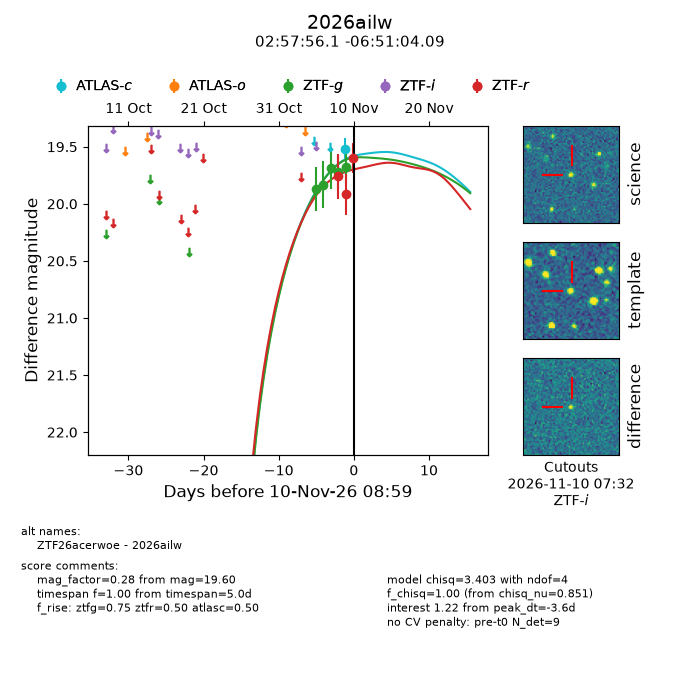
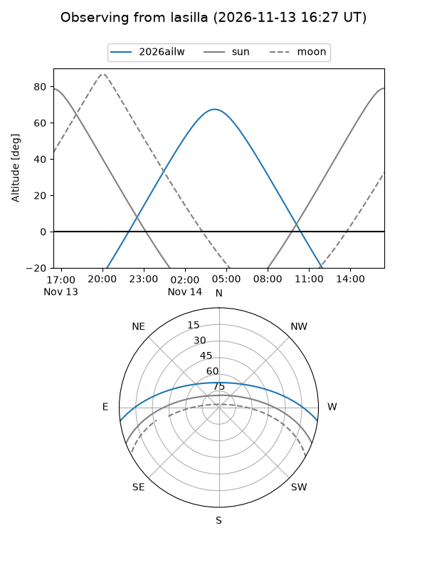
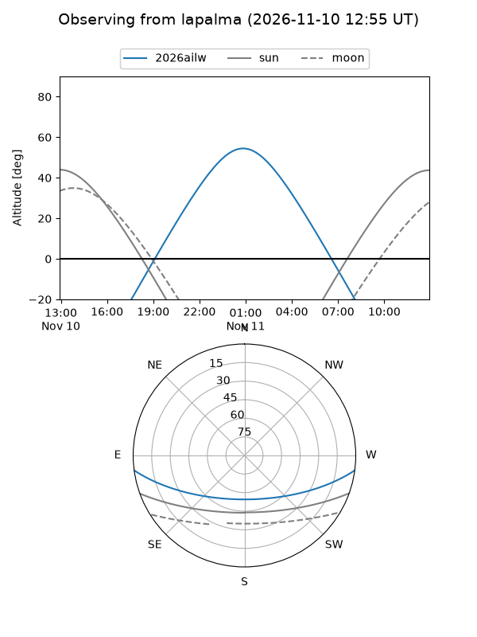
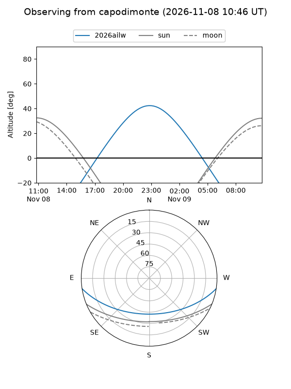
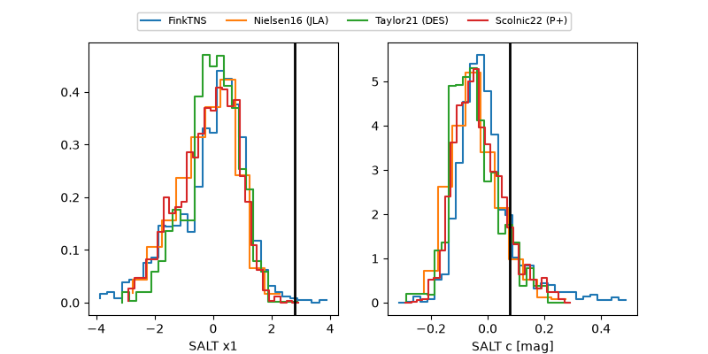

2026ailw
Target 2026ailw at 2026-11-10 09:02
Aliases and brokers:
FINK-ZTF: ztf.fink-portal.org/ZTF26acerwoe
Lasair-ZTF: lasair-ztf.lsst.ac.uk/objects/ZTF26acerwoe
ALeRCE-ZTF: alerce.online/object/ZTF26acerwoe
YSE-PZ: ziggy.ucolick.org/yse/transient_detail/2026ailw
TNS name: wis-tns.org/object/2026ailw
Direct TNS query: direct search
alt names
ZTF26acerwoe (ztf,fink_ztf)
2026ailw (tns,yse)
Coordinates:
equatorial (ra, dec) = 44.4839,-6.85114
equatorial (HMS+DMS) = 02:57:56.14,-06:51:04.09
galactic (l, b) = (184.7160,-53.78550)
Flags:
peak dt: -3.6
Photometry:
last atlasc=19.52, ztfg=19.68, ztfr=19.60
1 atlasc, 5 ztfg, 3 ztfr detections
Lightcurve

Visibility



Additional plots
